# ── Packages ──────────────────────────────────────────────────────────────────
library(tidyverse)
library(MatchIt)
library(CMatching)
library(cobalt)
library(lme4)
library(marginaleffects)
library(sensemakr)
library(gbm)
library(dbarts)
library(performance)
library(gt)
# ── AIR brand palette ─────────────────────────────────────────────────────────
air_navy <- "#00507F"
air_blue <- "#009DD7"
air_mid <- "#006E9F"
air_green <- "#08A94F"
air_gray <- "#E2E6E8"
air_dark <- "#1C252D"
# Default ggplot2 theme
theme_set(
theme_minimal(base_size = 12) +
theme(
plot.title = element_text(color = air_navy, face = "bold"),
panel.grid.minor = element_blank()
)
)
# ── Data ──────────────────────────────────────────────────────────────────────
timss <- readRDS("data/timss_df.rds")
# (required for within-site matching)
n_schools_all <- n_distinct(timss$school_id)
timss <- timss |>
filter(any(multisite_treatment == 1) & any(multisite_treatment == 0),
.by = school_id)
# the grouping variable as integer. Keeping both versions satisfies both requirements.
timss <- timss |> mutate(school_id_f = factor(school_id))Multisite individual assignment design, MIAD (Chapter 5)
TipHow to use this document
This is the code from the handbook chapter with the explanatory text removed. Run the chunks in order from the top; later chunks depend on objects created earlier. The numbered notes under a chunk explain the marked lines. The full discussion of each stage is in the handbook chapter.
NoteMain takeaways
- A multisite individual assignment design (MIAD) involves measuring outcomes on individuals (students) nested within sites (schools), and treatment is assigned at the individual level.
- In a MIAD the estimand can target an individual-average effect (every individual weighted equally) or a site-average effect (every site weighted equally). Researchers may also be interested in site-specific effects and between-site variation in the average effect.
- The choice among matching approaches (global, within-site, partially-pooled, preferential within-site) sets the size of the comparison pool and the degree of control for site-level confounders.
knitr::include_graphics("figures/miad_design.png")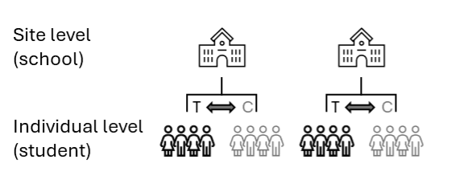
Stage 1: Define estimand and understand data
Examining the data context
site_diagnostics <- timss |>
summarise(
1 n_treated = sum(multisite_treatment == 1),
n_control = sum(multisite_treatment == 0),
n_total = n(),
2 pct_treated = 100 * n_treated / n_total,
.by = school_id
)
site_diagnostics |>
summarise(
3 min_treated = min(n_treated),
median_treated = median(n_treated),
4 min_pct_treated = min(pct_treated),
max_pct_treated = max(pct_treated),
sd_pct_treated = sd(pct_treated),
5 min_n_total = min(n_total),
max_n_total = max(n_total),
sd_n_total = sd(n_total)
) |>
6 gt() |>
cols_label(min_treated = "Min treated", median_treated = "Median treated",
min_pct_treated = "Min % treated", max_pct_treated = "Max % treated",
sd_pct_treated = "SD % treated", min_n_total = "Min school N",
max_n_total = "Max school N", sd_n_total = "SD school N") |>
fmt_number(columns = contains(c("pct", "sd")), decimals = 1)- 1
-
We compute Diagnostic 1 (within-site sample sizes) per school in
site_diagnostics. - 2
- Diagnostic 2 is the within-site treated share, expressed as a percentage.
- 3
- Aggregate of Diagnostic 1: the smallest treated count may indicate which school is likely to have the noisiest within-site estimate.
- 4
- Aggregate of Diagnostics 2 and 3: the range and standard deviation (SD) of treatment proportions across schools quantify between-site variation in treatment selection.
- 5
- Aggregate of Diagnostic 4: the range and SD of school sizes. A large spread means the individual-average and site-average estimands are more likely to diverge.
- 6
-
gt()renders the summary as a formatted table. We use it for every printed table in the handbook (see Chapter 4).
| Min treated | Median treated | Min % treated | Max % treated | SD % treated | Min school N | Max school N | SD school N |
|---|---|---|---|---|---|---|---|
| 1 | 7 | 3.0 | 32.1 | 7.1 | 22 | 111 | 20.3 |
- 1
-
One point per school, taken directly from
site_diagnostics. The horizontal spread is the site-size variation (Diagnostics 1 and 4). The vertical spread is the between-site variation in treatment selection (Diagnostic 3). - 2
- The dashed line marks a treated share of 50%. Schools above it have more treated than comparison students, which raises within-site common-support concerns (Diagnostic 2). Schools near 0% or 100% lack within-site treatment variation altogether.
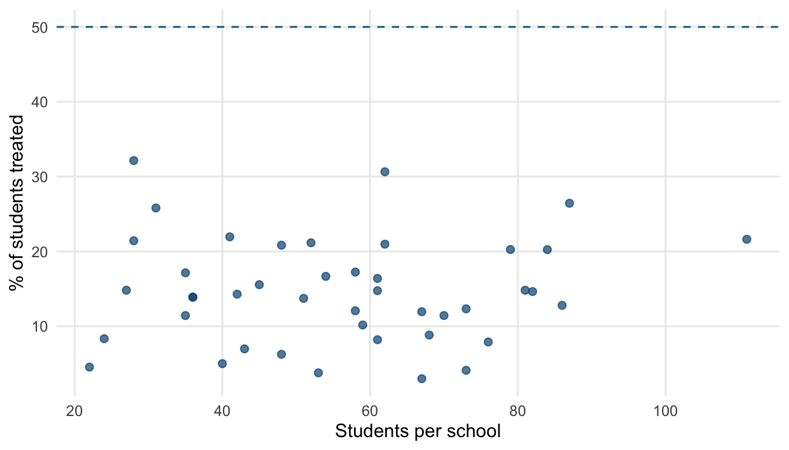
Stage 2: Define distance measure
Accounting for sites
# School-level ICCs (empty random-intercept models), as in Chapter 4
icc_outcome <- performance::icc(
lmer(math_score ~ 1 + (1 | school_id), data = timss))$ICC_adjusted
icc_conf <- performance::icc(
lmer(student_math_conf ~ 1 + (1 | school_id), data = timss))$ICC_adjusted
c(icc_outcome = icc_outcome, icc_math_conf = icc_conf) icc_outcome icc_math_conf
0.21423927 0.02622684 Covariates and propensity score formulas
# One propensity score formula for every model: student-level + school-level covariates
ps_formula <- multisite_treatment ~
student_sex + student_age + student_math_conf + student_like_math +
attend_preschool + dad_edu + mom_edu +
school_locale + school_pop + school_econ_pct +
school_shortage + school_discipline + school_place_assist +
school_achieve_used_mathEstimating the propensity score
- 1
-
ps_formulais the propensity score formula defined earlier in this stage. The formula serves two purposes inmatchit(). It specifies which variables enter the propensity score model and which variables appear in later balance diagnostics. - 2
-
method = NULLtellsmatchit()to skip matching and only estimate the propensity score. - 3
-
distance = "glm"fits a standard logistic regression internally to estimate the propensity score ("glm"uses the logit link by default). - 4
-
The fitted propensity scores are stored in
m_single$distance(one value per row oftimss). Storing them as a named column ontimssmakes it easy to pass any of them tomatchit()in Stage 3.
- 1
-
update(formula, ~ . + factor(school_id))keeps the original right-hand side and appendsfactor(school_id). R expandsfactor(school_id)to K−1 binary indicator columns in the design matrix (one school is held out as the reference level). - 2
-
distance = "glm"fits the logistic regression internally, exactly as in the single-level tab. - 3
-
The fitted propensity scores are stored as
pscore_feand carried forward through the remaining stages.
m_fe_int <- matchit(
1 update(ps_formula, ~ factor(school_id) * .),
data = timss,
method = NULL,
distance = "glm"
)
timss <- timss |>
mutate(pscore_fe_int = m_fe_int$distance)- 1
-
~ factor(school_id) * .expands tofactor(school_id) + . + factor(school_id):., which is the school indicator main effects, the covariate main effects, and all school × covariate interactions. The.refers back tops_formula’s right-hand side.
# Put the two wide-range school covariates on a stable scale for the GLMM
ps_formula_glmm <- update(
ps_formula,
~ . - school_pop - school_econ_pct +
scale(school_pop) + scale(school_econ_pct)
1)
ps_ri_model <- glmer(
2 update(ps_formula_glmm, ~ . + (1 | school_id)),
data = timss,
3 family = binomial(),
control = glmerControl(
4 optimizer = "bobyqa",
optCtrl = list(maxfun = 2e5)
)
)
timss <- timss |>
mutate(pscore_ri = predict(ps_ri_model, type = "response"))
m_ri <- matchit(
ps_formula,
data = timss,
method = NULL,
5 distance = timss$pscore_ri
)- 1
-
scale()standardizes the two covariates with the widest numeric ranges (school_popspans the hundreds of thousands). Generalized linear mixed model (GLMM) optimizers can fail to converge when predictors are on very different scales. - 2
-
(1 | school_id)adds a random intercept that varies by school. Inlme4syntax the term inside the parentheses describes what varies across the grouping factor on the right of the|. Here1means just the intercept varies. The slope on each student covariate is constrained to be the same in every school. Compared to the fixed-effects model, this estimates one variance parameter for the school intercepts instead of K−1 separate dummies. - 3
-
family = binomial()makes this a logistic mixed-effects model, the GLMM analogue ofglm(..., family = binomial()). - 4
-
optimizer = "bobyqa"applies the BOBYQA optimizer to both stages of the fit.lme4’s default switches to Nelder-Mead for the second stage, which converges less reliably for logistic GLMMs.maxfun = 2e5raises the function-evaluation ceiling, which helps for models with many random-effect levels or sparse within-group data. - 5
-
Passing a numeric vector to
distance(instead of a string like"logit") supplies the precomputed propensity score.ps_formulathen only defines the covariates for later balance diagnostics. The RIS and partially-pooled tabs reuse this pattern.
ps_ris_model <- glmer(
update(ps_formula_glmm,
1 ~ . + (1 + student_math_conf | school_id)),
data = timss,
family = binomial(),
control = glmerControl(
2 optimizer = "bobyqa",
optCtrl = list(maxfun = 2e5)
)
)
timss <- timss |>
mutate(pscore_ris = predict(ps_ris_model, type = "response"))
m_ris <- matchit(
ps_formula,
data = timss,
method = NULL,
distance = timss$pscore_ris
)- 1
-
(1 + student_math_conf | school_id)adds both a random intercept and a random slope forstudent_math_conf. - 2
- Same optimizer and function-evaluation ceiling as the RI model, since RIS models are even more prone to slow or failed convergence than RI.
# Fit one logistic regression per locale; predicted probabilities are the propensity score
timss <- timss |>
1 group_split(school_locale) |>
map(\(d) mutate(d, pscore_partial = predict(
2 glm(ps_formula, data = d, family = binomial()),
type = "response"
))) |>
list_rbind()
m_partial_ps <- matchit(
ps_formula,
data = timss,
method = NULL,
3 distance = timss$pscore_partial
)- 1
-
group_split(school_locale)divides the data into one tibble per locale, keeping every column. The rows come back stacked in locale order afterlist_rbind(). The grouping can be swapped for any grouping that is sensible for the study. (group_by()withgroup_modify()does not work here because it removes the grouping column from each piece, and the propensity score formula needs it.) - 2
-
Each locale’s
glm()sees the full formula.school_localeis constant within the group, so its coefficient comes backNA(nothing to estimate), and every other school-level covariate still varies across the schools within a locale and contributes to the fit. - 3
-
We pass the precomputed vector to
matchit().
1set.seed(20250326)
# Full covariate set + school indicator: mirrors FE-intercepts
2ps_formula_ml <- update(ps_formula, ~ . + school_id_f)
m_gbm <- matchit(
formula = ps_formula_ml,
data = timss,
method = NULL,
3 distance = "gbm"
)
m_bart <- matchit(
formula = ps_formula_ml,
data = timss,
method = NULL,
4 distance = "bart"
)
timss <- timss |>
mutate(
pscore_gbm = m_gbm$distance,
pscore_bart = m_bart$distance
)- 1
- Both algorithms are stochastic. Setting a seed before fitting the model keeps the propensity scores (and downstream matches) reproducible across re-renders.
- 2
-
update(ps_formula, ~ . + school_id_f)appendsschool_id_f(a factor-typed copy ofschool_idadded in the setup chunk) to the formula, mirroring the FE-intercepts tab. Unlike the linear models, the tree algorithms tolerate redundant predictors, so the school covariates and the school indicator can both be candidate split features. We use the factor copy here because matchit’s gbm/bart backends require any factor predictor in the formula to be an actual column rather than afactor()call. - 3
-
distance = "gbm"calls thegbmpackage internally.MatchItchooses the number of trees by five-fold cross-validation (or out-of-bag error), a predictive criterion rather than a balance criterion. - 4
-
distance = "bart"calls thedbartspackage and uses the posterior mean prediction as the propensity score, also with no balance tuning. BART tends to handle noisy covariates and small cell sizes more efficiently than GBM but is slower to fit.
Checking common support
1bal.plot(m_fe,
2 var.name = "distance",
3 which = "unadjusted",
sample.names = "Full sample",
colors = c(air_navy, air_blue)) +
scale_fill_manual(values = c(air_navy, air_blue),
labels = c("Comparison", "Treated")) +
labs(x = "Propensity score", fill = "Group") +
ggtitle("Fixed effects (intercepts only)")- 1
-
bal.plot()is from thecobaltpackage and accepts amatchitobject directly. - 2
-
var.name = "distance"plots the propensity score itself. To inspect overlap on a specific covariate (for example,student_math_conf), pass that covariate name instead. - 3
-
which = "unadjusted"plots the pre-matching distributions. No matching has happened at this stage, so this is also whatbal.plot()displays by default. We set the argument explicitly so the plotted sample is unambiguous.
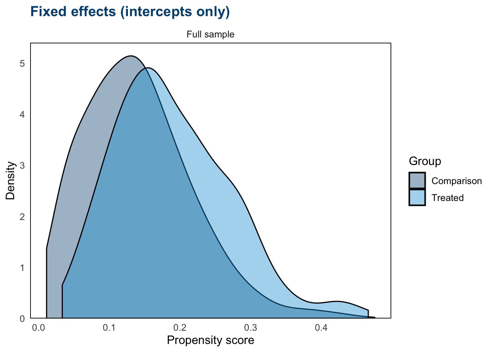
Stage 3: Implement matching method
Global matching
- 1
-
method = "nearest"requests 1:1 nearest-neighbor matching: each treated student is paired with its closest comparison student on the propensity score, referred to as “greedy” matching. - 2
-
distance = timss$pscore_fereuses the fixed-effects (intercepts) propensity score estimated in Stage 2. To use a different score, pass any of the otherpscore_*vectors estimated there. - 3
-
replace = FALSElimits each comparison student to at most one matched pair. Setting it toTRUEallows comparison students to be reused, which expands the effective comparison pool but introduces dependence between pairs that has to be accounted for in the outcome model (typically via frequency weights). - 4
-
caliper = 0.25caps how far apart a matched pair’s propensity scores can be, in standard-deviation units of the score (see the caliper note in Stage 3 of the handbook chapter). - 5
-
estimand = "ATT"targets the average effect on the treated chosen in Stage 1: every treated student is kept (subject to the caliper) and comparison students are selected for them.
Within-site matching
m_within <- matchit(
formula = ps_formula,
data = timss,
method = "nearest",
distance = timss$pscore_fe,
1 exact = ~school_id,
replace = FALSE,
caliper = 0.25,
estimand = "ATT"
)- 1
-
exact = ~school_idis the within-site constraint: a treated student can only be paired with a comparison student from the same school. Theexactargument accepts a one-sided formula naming the variable(s) on which matches must exactly match. Multiple stratification variables can be combined asexact = ~school_id + cohort.method,distance,replace,caliper, andestimandhave the same meanings as in the global block above.
Partially-pooled matching
m_partial <- matchit(
formula = ps_formula,
data = timss,
method = "nearest",
distance = timss$pscore_fe,
1 exact = ~school_locale,
replace = FALSE,
caliper = 0.25,
estimand = "ATT"
)- 1
-
Same as the within-site call, with one change: the
exactvariable goes fromschool_idtoschool_locale. A treated student in an urban school can only be matched to a comparison student in another urban school. Locale-grouped pools are larger than single-school pools, so retention is typically higher than strict within-site, at the cost of less within-school comparability.method,distance,replace,caliper, andestimandhave the same meanings as before.
Preferential within-site matching
- 1
-
MatchPW()requires its input vectors to be sorted in ascending order ofGroup. We sorttimssbyschool_idonce and pass the sorted vectors to the function. The indices that come back refer to positions in the sorted frame, and the Stage 4 retention and balance computations use them directly. We do not supply the outcome (Y): matching is a design step, and the outcome stays out of it until Stage 5. - 2
-
Xis the matching distance. We reuse the fixed-effects (intercepts) propensity score from Stage 2 (pscore_fe) for consistency with the other matching approaches. - 3
-
caliper = 0.25isMatchPW()’s default. We write it out so the setting is explicit and consistent with thematchit()calls. - 4
-
In
MatchPW(),replace = FALSEprevents comparison students matched in the within-site step from being reused in the fallback step. The fallback step itself still reuses comparison students with replacement, the one exception to matching without replacement in this document. - 5
-
summary(m_pref)reports original and matched counts by group and how many treated students the caliper dropped. Reporting the within- versus cross-site mix is standard practice for preferential within-site matching. It can be computed by comparingschool_idatindex.treatedandindex.control.
Estimate... 0
SE......... NULL
Original number of observations.............. 2405
Original number of treated obs............... 355
Original number of treated obs by group......
1 2 3 4 5 6 7 8 9 10 11 12 13 14 15 17 18 19 20 21 22 23 24 25 26 27
16 1 9 12 8 5 13 5 2 19 10 7 2 6 5 6 11 3 17 9 12 7 6 24 9 3
28 29 30 32 33 34 35 37 38 39 40 41 42 43 44 45 46
6 6 4 9 23 11 10 6 8 9 2 7 4 8 2 3 10
Matched number of observations............... 355
Matched number of observations (unweighted). 370
Caliper (SDs).......................................... 0.25
Number of obs dropped by 'exact' or 'caliper' ......... 0
Number of obs dropped by 'exact' or 'caliper' by group
1 2 3 4 5 6 7 8 9 10 11 12 13 14 15 17 18 19 20 21 22 23 24 25 26 27
0 0 0 0 0 0 0 0 0 0 0 0 0 0 0 0 0 0 0 0 0 0 0 0 0 0
28 29 30 32 33 34 35 37 38 39 40 41 42 43 44 45 46
0 0 0 0 0 0 0 0 0 0 0 0 0 0 0 0 0 # Within- versus cross-site mix
.pref_cross <- timss_sorted$school_id[m_pref$index.treated] !=
timss_sorted$school_id[m_pref$index.control]
n_pref_treated <- length(unique(m_pref$index.treated))
n_pref_fallback <- length(unique(m_pref$index.treated[.pref_cross]))
n_pref_within <- n_pref_treated - n_pref_fallback
c(within_site = n_pref_within, cross_site_fallback = n_pref_fallback,
treated_matched = n_pref_treated) within_site cross_site_fallback treated_matched
346 9 355 Stage 4: Assess quality of the matched sample
Sample retention
n_treated_total <- sum(timss$multisite_treatment == 1)
matchit_objs <- list(
"Global" = m_global,
"Within-site" = m_within,
"Partially-pooled (locale)" = m_partial
)
retention <- matchit_objs |>
1 map_dbl(\(m) sum(m$weights[timss$multisite_treatment == 1] > 0)) |>
enframe(name = "method", value = "n_treated_matched") |>
add_row(method = "Preferential within-site",
2 n_treated_matched = length(unique(m_pref$index.treated))) |>
mutate(
n_treated_total = n_treated_total,
3 pct_retained = 100 * n_treated_matched / n_treated_total
)
retention |>
gt() |>
cols_label(method = "Matching approach", n_treated_matched = "Treated matched",
n_treated_total = "Treated total", pct_retained = "% retained") |>
fmt_number(columns = pct_retained, decimals = 1)- 1
-
For each
matchitobject,weights > 0flags units that ended up in the matched sample. Restricting to treated rows (multisite_treatment == 1) and summing gives the count of treated students that found a match. The same logic works for anyMatchItobject regardless ofmethod. - 2
-
m_pref$index.treatedis the vector of row indices for treated students that found a match in either the within-site step or the cross-site fallback. When several comparison students tie on the propensity score, the underlyingMatchingpackage records one row per tied match, so a treated student can appear more than once. Countingunique()indices gives the number of distinct treated students retained. - 3
-
pct_retaineddivides by the total treated count so the result is comparable across methods.
| Matching approach | Treated matched | Treated total | % retained |
|---|---|---|---|
| Global | 355 | 355 | 100.0 |
| Within-site | 345 | 355 | 97.2 |
| Partially-pooled (locale) | 353 | 355 | 99.4 |
| Preferential within-site | 355 | 355 | 100.0 |
Within-site retention rates
treated_by_school <- timss |>
filter(multisite_treatment == 1) |>
1 count(school_id, name = "n_treated")
matched_ids <- list(
"Global" = m_global$weights,
"Within-site" = m_within$weights,
"Partially-pooled (locale)" = m_partial$weights
) |>
2 map(\(w) timss |> filter(w > 0, multisite_treatment == 1) |> pull(school_id))
matched_ids[["Preferential within-site"]] <-
3 timss_sorted |> slice(unique(m_pref$index.treated)) |> pull(school_id)
site_retention <- matched_ids |>
imap(\(ids, method) {
tibble(school_id = ids) |>
count(school_id, name = "n_matched") |>
right_join(treated_by_school, by = "school_id") |>
mutate(n_matched = replace_na(n_matched, 0),
pct = 100 * n_matched / n_treated,
method = method)
}) |>
4 list_rbind() |>
mutate(method = factor(method, levels = rev(names(matched_ids))))
ggplot(site_retention, aes(x = method, y = pct)) +
geom_jitter(width = 0.12, alpha = 0.5, size = 1.8, color = air_navy) +
labs(x = NULL, y = "% of treated students retained (per school)") +
coord_flip()- 1
- The denominator is the count of treated students per school in the analytic sample.
- 2
-
For each
matchitobject, filtering to treated rows with positive weights and pullingschool_idgives each retained treated student’s school. - 3
-
For the preferential approach,
slice()picks the retained treated rows out of the sorted frame by theirm_pref$index.treatedpositions. - 4
-
One row per school per approach: matched count, treated count, and the within-school retention percentage. Schools where no treated student matched would appear at 0% via the
right_join()+replace_na()step.
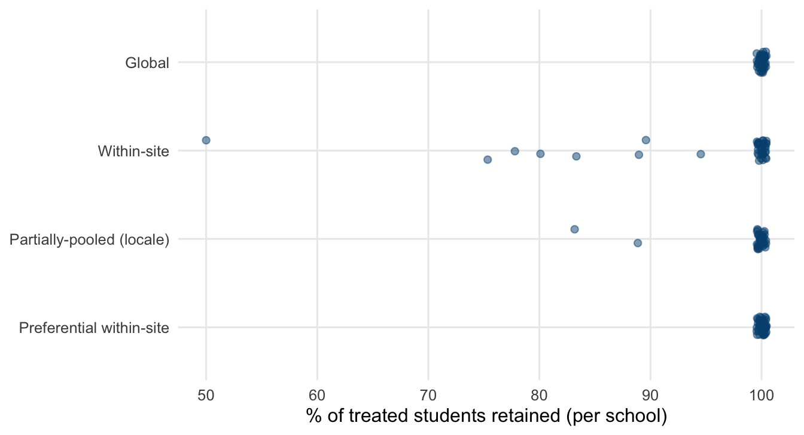
Covariate balance (SMD & variance ratio)
var_labels <- c(
distance = "Propensity score",
school_id = "School",
student_sex = "Sex",
student_age = "Age",
student_math_conf = "Math confidence",
student_like_math = "Liking math",
attend_preschool = "Preschool",
dad_edu = "Father's education",
mom_edu = "Mother's education",
school_locale = "School locale",
school_pop = "Community population",
school_econ_pct = "Economically disadvantaged %",
school_shortage = "Resource shortage scale",
school_discipline = "Discipline/climate index",
school_place_assist = "Provides schoolwork assistance",
school_achieve_used_math = "Uses math achievement data"
)love.plot(m_global, binary = "std", stats = c("mean.diffs", "variance.ratios"),
thresholds = c(m = .25, v = 2),
sample.names = c("Full sample", "Matched sample"),
var.names = var_labels,
colors = c(air_navy, air_blue), title = "Global matching")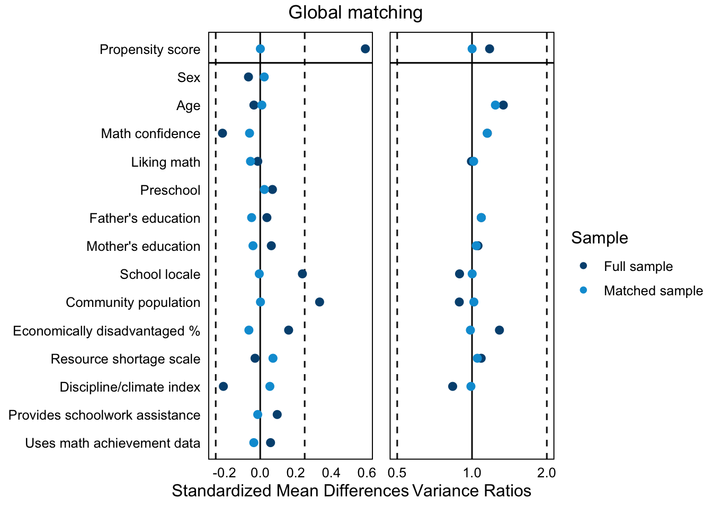
love.plot(m_within, binary = "std", stats = c("mean.diffs", "variance.ratios"),
thresholds = c(m = .25, v = 2),
sample.names = c("Full sample", "Matched sample"),
var.names = var_labels,
colors = c(air_navy, air_blue), title = "Within-site matching")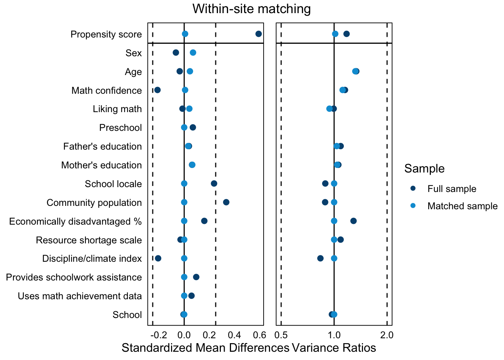
love.plot(m_partial, binary = "std", stats = c("mean.diffs", "variance.ratios"),
thresholds = c(m = .25, v = 2),
sample.names = c("Full sample", "Matched sample"),
var.names = var_labels,
colors = c(air_navy, air_blue), title = "Partially-pooled (within locale)")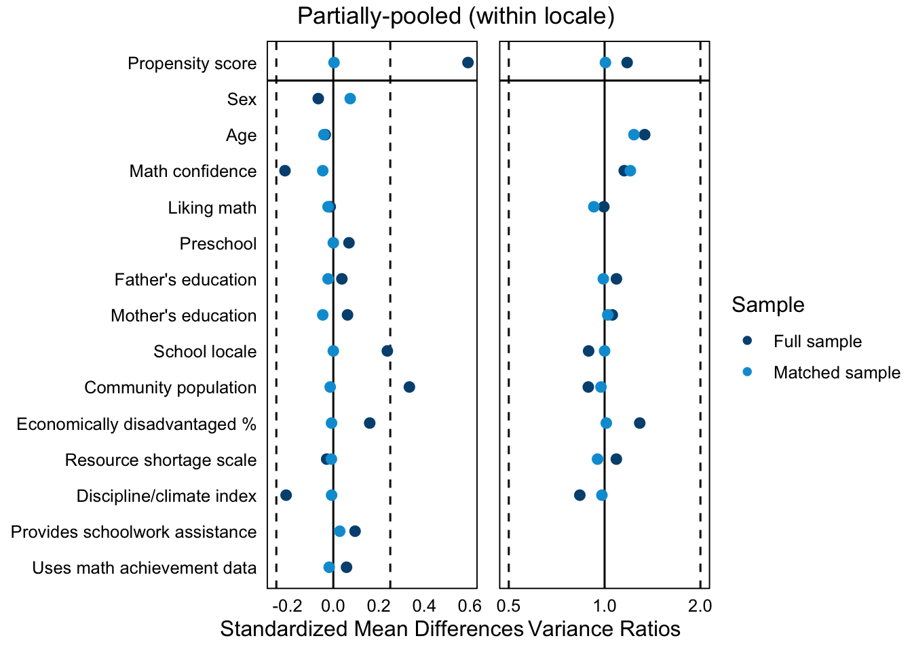
# Matching weights on the full (sorted) sample: 0 = not matched
pair_weights <- tibble(
1 row = c(m_pref$index.treated, m_pref$index.control),
w = rep(m_pref$weights, 2)
) |>
summarise(w = sum(w), .by = row)
w_pref <- timss_sorted |>
mutate(row = row_number()) |>
left_join(pair_weights, by = "row") |>
mutate(w = replace_na(w, 0)) |>
pull(w)
pref_bal <- bal.tab(ps_formula,
2 data = timss_sorted,
weights = w_pref,
un = TRUE,
binary = "std",
s.d.denom = "treated",
stats = c("mean.diffs", "variance.ratios"))
love.plot(pref_bal,
stats = c("mean.diffs", "variance.ratios"),
thresholds = c(m = .25, v = 2),
sample.names = c("Full sample", "Matched sample"),
var.names = var_labels,
colors = c(air_navy, air_blue),
title = "Preferential within-site matching")- 1
- Each matched pair contributes its weight to both of its rows, so we stack the treated and comparison index vectors, repeat the pair weights for both, and sum by row.
- 2
-
Passing the full sorted sample (not just the matched rows) gives cobalt a genuine pre-match sample (
un = TRUEcomputes it), so this tab shows the same pre/post comparison as the other three, with the same SMD denominator.
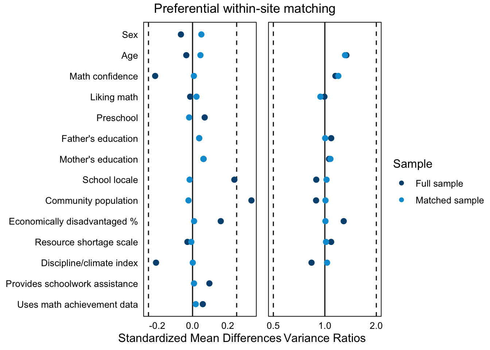
smd_summary <- function(b) {
bal <- b$Balance |> filter(Type != "Distance")
vr <- bal$V.Ratio.Adj[is.finite(bal$V.Ratio.Adj)]
c(smd = max(abs(bal$Diff.Adj), na.rm = TRUE),
smd_mean = mean(abs(bal$Diff.Adj), na.rm = TRUE),
vr_min = min(vr),
vr_max = max(vr))
}
smd_tbl <- list(
"Global" = bal.tab(m_global, binary = "std", stats = c("mean.diffs", "variance.ratios")),
"Within-site" = bal.tab(m_within, binary = "std", stats = c("mean.diffs", "variance.ratios")),
"Partially-pooled (locale)" = bal.tab(m_partial, binary = "std", stats = c("mean.diffs", "variance.ratios")),
"Preferential within-site" = pref_bal
) |>
map(smd_summary) |>
bind_rows(.id = "rule")Comparing balance across approaches
smd_tbl |>
gt() |>
cols_label(rule = "Matching approach",
smd = "Max |SMD|", smd_mean = "Mean |SMD|",
vr_min = "Min VR", vr_max = "Max VR") |>
fmt_number(columns = c(smd, smd_mean), decimals = 3) |>
fmt_number(columns = c(vr_min, vr_max), decimals = 2)| Matching approach | Max |SMD| | Mean |SMD| | Min VR | Max VR |
|---|---|---|---|---|
| Global | 0.072 | 0.036 | 0.99 | 1.24 |
| Within-site | 0.070 | 0.017 | 0.94 | 1.32 |
| Partially-pooled (locale) | 0.074 | 0.024 | 0.92 | 1.24 |
| Preferential within-site | 0.061 | 0.023 | 0.94 | 1.31 |
Within-site balance after within-site matching
# Per-school balance via cobalt (signed SMDs; we take absolute values to plot)
bal_within <- bal.tab(
m_within,
1 data = timss,
cluster = "school_id",
binary = "std",
abs = FALSE,
un = FALSE
)
# Student-level display names, reused from var_labels (Stage 4 balance section)
covariate_labels <- var_labels[c("student_sex", "student_age", "student_math_conf",
"student_like_math", "attend_preschool",
"dad_edu", "mom_edu")]
# Treated students matched per school; point size below encodes this
matched_treated <- tibble(school_id = as.character(timss$school_id),
treated = timss$multisite_treatment,
w = m_within$weights) |>
filter(treated == 1, w > 0) |>
count(school_id, name = "n_treated_matched")
2within_smds <- bal_within$Cluster.Balance |>
imap(\(tab, school_id) {
tab$Balance |>
rownames_to_column("covariate") |>
dplyr::select(covariate, smd = Diff.Adj) |>
filter(covariate %in% names(covariate_labels)) |>
mutate(school_id = school_id)
}) |>
list_rbind() |>
3 filter(is.finite(smd)) |>
mutate(covariate = unname(covariate_labels[covariate])) |>
left_join(matched_treated, by = "school_id")
4ggplot(within_smds |> filter(abs(smd) <= 3),
aes(x = abs(smd), y = factor(covariate, levels = rev(unname(covariate_labels))))) +
5 geom_jitter(aes(size = n_treated_matched),
height = 0.15, alpha = 0.4, color = air_navy) +
scale_size_continuous(range = c(1, 3.5),
name = "Treated students\nmatched") +
geom_vline(xintercept = 0.25, linetype = "dashed", color = air_mid) +
labs(x = "Absolute SMD (within school)", y = NULL) +
theme_minimal(base_size = 12) +
theme(panel.grid.minor = element_blank())- 1
-
cluster = "school_id"tellsbal.tabto compute balance separately for each level ofschool_id.un = FALSEskips the pre-matching balance, which Stage 4 already reported. When the cluster variable is given as a string,bal.tabneeds an explicitdataargument to find the column, so we passdata = timss. The result is a list keyed by cluster level, accessible via$Cluster.Balance. - 2
-
Each element of
$Cluster.Balanceis itself abal.tabobject whose$Balancedata frame has one row per covariate. We bind them into a long tibble keyed byschool_idand filter to the student-level covariates. - 3
-
Schools whose matched sample is too small for a covariate’s SMD (for example, no variance left in that covariate) return
NAor infinite values. We drop those points rather than plot them. - 4
-
The display is truncated at an absolute SMD of 3 so the 0.25 threshold region stays readable.
sum(abs(within_smds$smd) > 3)counts the points beyond the display limit. - 5
- Point size encodes how many matched treated students each school’s SMD is based on, so the sample size behind an extreme point is visible.
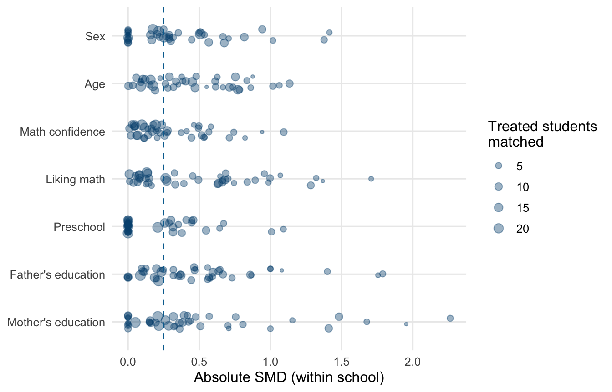
Site-average balance
# Within-school variance ratios, for the continuous covariates
cont_covs <- c("student_age", "student_math_conf", "student_like_math",
1 "dad_edu", "mom_edu")
within_vrs <- timss |>
filter(m_within$weights > 0) |>
pivot_longer(all_of(cont_covs), names_to = "covariate") |>
summarise(
vr = var(value[multisite_treatment == 1]) /
var(value[multisite_treatment == 0]),
n_treated = sum(multisite_treatment),
n_comp = sum(1 - multisite_treatment),
.by = c(school_id, covariate)
) |>
2 filter(n_treated >= 2, n_comp >= 2, is.finite(vr), vr > 0) |>
summarise(vr_min = min(vr), vr_mean = mean(vr), vr_max = max(vr),
.by = covariate) |>
mutate(covariate = unname(covariate_labels[covariate]))
site_avg_tbl <- within_smds |>
summarise(
3 site_avg_smd = mean(smd),
4 mean_abs_smd = mean(abs(smd)),
.by = covariate
) |>
left_join(within_vrs, by = "covariate")
site_avg_tbl |>
gt() |>
cols_label(covariate = "Covariate",
site_avg_smd = "Site-average SMD",
mean_abs_smd = "Mean |SMD| across schools",
vr_min = "Min VR", vr_mean = "Mean VR", vr_max = "Max VR") |>
fmt_number(columns = c(site_avg_smd, mean_abs_smd), decimals = 3) |>
fmt_number(columns = starts_with("vr_"), decimals = 2) |>
sub_missing(columns = starts_with("vr_"), missing_text = "")- 1
-
Variance ratios are computed for the continuous covariates only. For a binary covariate the variance is a function of the mean, so a variance ratio adds no information beyond the SMD (
cobaltfollows the same convention). The binary rows show blank VR cells. - 2
-
A within-school variance needs at least two matched students in each arm, so schools with a single matched treated or comparison student drop out of the VR columns (they still contribute to the SMD columns). One
summarise()per school and covariate computes the treated-to-comparison variance ratio directly. - 3
- The signed within-school SMDs averaged with equal school weights. This is the balance summary that parallels the site-average estimand. Values near zero mean the imbalances do not run in a consistent direction across schools.
- 4
- The average absolute within-school SMD ignores direction, so it does not benefit from cancellation. Comparing the two columns separates systematic imbalance (both large) from noisy but directionless imbalance (only the second is large).
| Covariate | Site-average SMD | Mean |SMD| across schools | Min VR | Mean VR | Max VR |
|---|---|---|---|---|---|
| Sex | 0.012 | 0.336 | |||
| Age | 0.128 | 0.703 | 0.02 | 2.76 | 30.86 |
| Math confidence | 0.220 | 0.500 | 0.01 | 1.78 | 6.76 |
| Liking math | 0.014 | 0.629 | 0.11 | 2.48 | 54.74 |
| Preschool | 0.042 | 0.189 | |||
| Father's education | 0.021 | 0.500 | 0.09 | 1.59 | 9.00 |
| Mother's education | 0.059 | 0.490 | 0.11 | 1.94 | 9.00 |
Stage 5: Analyze outcomes
Estimating the individual-average effect
# Reused later where a single treatment coefficient is needed.
1outcome_formula <- math_score ~ multisite_treatment +
student_sex + student_age + student_math_conf + student_like_math +
attend_preschool + dad_edu + mom_edu
# Doubly-robust formula with treatment-by-covariate interactions
2outcome_formula_int <- math_score ~ multisite_treatment *
(student_sex + student_age + student_math_conf + student_like_math +
attend_preschool + dad_edu + mom_edu)
# Outcome formula for within-site: adds school fixed intercepts
3outcome_formula_within <- update(
outcome_formula_int, ~ . + factor(school_id)
)
# Extract the within-site matched dataset
4dat_within <- match.data(m_within)
# Within-site effect (school FE in the outcome model, two-way clustered SEs)
5fit_within <- lm(outcome_formula_within, data = dat_within, weights = weights)
att_within <- avg_comparisons(
6 fit_within, variables = "multisite_treatment",
newdata = filter(dat_within, multisite_treatment == 1),
wts = "weights",
7 vcov = ~subclass + school_id
)
att_within |> dplyr::select(estimate, std.error, conf.low, conf.high)- 1
-
The outcome model uses the student-level covariates only. The school-level covariates from
ps_formulaare omitted because the school fixed intercepts added below absorb them. - 2
-
multisite_treatment * (...)expands to the treatment indicator, the covariate main effects, and a treatment-by-covariate interaction for every covariate. - 3
-
For within-site matching, we extend the outcome model with
factor(school_id), a fixed intercept per school. Because matched pairs share a school, this is the outcome-model analogue of the matching approach. It absorbs between-school differences in outcome levels, while the dependence from nesting is handled by the clustered standard errors. - 4
-
match.data()returns the matched subset of the MatchIt-based design withweightsandsubclasscolumns appended. - 5
-
weights = weightspasses the matching weights tolm(). For 1:1 nearest-neighbor without replacement these are all 0/1, so the regression is effectively run on the matched rows. For designs with reuse (replacement, full matching, ratio matching) the weights are non-binary and must be passed to recover the correct estimand. - 6
-
variables = "multisite_treatment"is our binary treatment indicator.avg_comparisons()switches each student’s treatment indicator from 0 to 1 and averages the predicted outcome difference.newdata = filter(..., multisite_treatment == 1)restricts that average to the treated students, andwts = "weights"passes the matching weights into the average. Because the model has treatment-by-covariate interactions, each student’s model-implied effect is different. Averaging those effects over the treated students is what makes this number the effect on the treated rather than a whole-sample average. - 7
-
vcov = ~subclass + school_idrequests two-way clustered standard errors on the matched pair and the school. Under within-site matching, pairs are nested in schools, so this equals school-only clustering here. We keep the two-way form so the recommendation is uniform across the matching approaches.
Estimate Std. Error 2.5 % 97.5 %
-28.8 4.99 -38.5 -19Estimating the site-average effect
Treatment-by-school interactions
# One treatment effect per school: add treatment-by-school interactions
fit_site <- lm(
update(outcome_formula, ~ . + factor(school_id) +
1 multisite_treatment:factor(school_id)),
data = dat_within, weights = weights
)
# Conditional average treatment effect for each school
cate_school <- avg_comparisons(
fit_site, variables = "multisite_treatment",
newdata = filter(dat_within, multisite_treatment == 1),
wts = "weights",
2 by = "school_id",
3 vcov = ~subclass
)
# Site-average effect: average the school CATEs with equal school weights
4att_site_avg <- hypotheses(cate_school, hypothesis = ~ I(mean(x)))
att_site_avg |> dplyr::select(estimate, std.error, conf.low, conf.high)- 1
-
The additive covariates keep one slope each, and
multisite_treatment:factor(school_id)adds a treatment-effect deviation per school. Each school gets its own treatment-effect parameter, while the covariate adjustment is shared across schools. - 2
-
by = "school_id"makesavg_comparisons()average the model-implied effects within each school separately, returning one CATE per school for that school’s treated students. - 3
- This model is the exception to the two-way clustering rule. Each treatment-by-school coefficient is identified entirely within one school, and cluster-robust variance breaks down for a parameter identified within a single cluster, so school-level (or two-way) clustering here understates the uncertainty substantially. We cluster on the matched pair instead. The school-level structure itself is absorbed by the school terms in the model.
- 4
-
hypotheses()(also frommarginaleffects) post-processes the school CATEs.hypothesis = ~ I(mean(x))takes their unweighted mean, so every school counts equally, which matches the Stage 1 estimand exactly, and the standard error accounts for the averaging.
Estimate Std. Error 2.5 % 97.5 %
-30.1 4.86 -39.6 -20.6The FIRC model
# FIRC model: fixed school intercepts, random treatment slope
firc_model <- lmer(
1 math_score ~ 0 + factor(school_id) +
2 multisite_treatment +
student_sex + student_age + student_math_conf +
student_like_math + attend_preschool + dad_edu + mom_edu +
3 (0 + multisite_treatment | school_id),
data = dat_within,
weights = dat_within$weights,
4 control = lmerControl(optimizer = "bobyqa")
)- 1
-
0 + factor(school_id)fits a fixed intercept per school. This is the “fixed-intercept” part of FIRC, absorbing all between-school baseline differences. - 2
-
multisite_treatmentis the treatment term; its coefficient is the estimate we read below. - 3
-
(0 + multisite_treatment | school_id)estimates a random treatment slope (the “random-coefficient” part of FIRC), capturing how the effect varies by school. - 4
-
optimizer = "bobyqa"swapslmer()’s default optimizer for theminqaBOBYQA implementation, which converged cleanly here. Models with random slopes and small within-site samples often need an optimizer change.
- 1
-
fixef()returns the fixed-effects coefficients from almerfit. Subsetting by"multisite_treatment"gives the precision-weighted site-average effect across schools. This is the one effect we read from the coefficient rather than throughavg_comparisons(), because the FIRC coefficient is itself the precision-weighted target. G-computation on this model would either reproduce it (withre.form = NA) or, by using the random slopes, shift to a different, sample-weighted estimand. - 2
-
VarCorr()returns the variance-covariance structure of the random effects. Wrapping inas.data.frame()gives a tidy long-format table with one row per variance component. The row forschool_id/multisite_treatmentis the between-school variance of the treatment effect.
multisite_treatment
-29.06265
grp var1 var2 vcov sdcor
1 school_id multisite_treatment <NA> 231.3326 15.20962
2 Residual <NA> <NA> 3176.4581 56.36008# Helper values reused in the caterpillar plot below
delta_firc <- fixef(firc_model)["multisite_treatment"]
tau2_firc <- as.data.frame(VarCorr(firc_model)) |>
filter(grp == "school_id", var1 == "multisite_treatment") |>
pull(vcov)
tau_firc <- sqrt(tau2_firc)
sigma_firc <- sigma(firc_model)
c(site_average = delta_firc, between_school_sd = tau_firc, residual_sd = sigma_firc)site_average.multisite_treatment between_school_sd
-29.06265 15.20962
residual_sd
56.36008 Estimating site-specific effects
# Get the slope random effects
re <- as.data.frame(ranef(firc_model, condVar = TRUE,
1 whichel = "school_id"))
u1 <- re |>
filter(term == "multisite_treatment") |>
rename(u1j = condval, u1j.se = condsd) |>
mutate(
2 u1j.lb = u1j - 1.96 * u1j.se,
u1j.ub = u1j + 1.96 * u1j.se,
school_id = as.character(grp),
3 effect = delta_firc + u1j,
effect.lb = delta_firc + u1j.lb,
effect.ub = delta_firc + u1j.ub
) |>
dplyr::select(school_id, u1j, u1j.se, effect, effect.lb, effect.ub) |>
left_join(cate_school |>
mutate(school_id = as.character(school_id)) |>
dplyr::select(school_id, cate = estimate),
4 by = "school_id") |>
arrange(effect) |>
mutate(rank = row_number())
ggplot(u1, aes(y = rank)) +
5 geom_vline(xintercept = delta_firc, color = air_mid) +
geom_vline(xintercept = 0, linetype = "dashed", color = air_dark) +
geom_segment(aes(x = effect.lb, xend = effect.ub, yend = rank),
6 color = "darkgrey", linewidth = 0.4) +
geom_point(aes(x = cate, shape = "Unpooled CATE"),
color = air_mid, size = 1.6) +
geom_point(aes(x = effect, shape = "FIRC (partially pooled)"),
color = air_navy, size = 1.4) +
scale_shape_manual(NULL, values = c("FIRC (partially pooled)" = 16,
"Unpooled CATE" = 1)) +
labs(x = "School-specific treatment effect (points)",
y = "School (ordered by FIRC effect)") +
theme(axis.text.y = element_blank(),
panel.grid.major.y = element_blank(),
legend.position = "bottom")- 1
-
as.data.frame()on aranef(..., condVar = TRUE)result returns the random effects in long format:grp(the school),term(which random effect),condval(the predicted deviation), andcondsd(its conditional standard deviation).whichel = "school_id"picks the grouping factor. - 2
- 95% bounds on the deviation, from the conditional standard deviations. These intervals reflect the uncertainty in each school’s deviation, not the uncertainty in the site-average effect itself, so read them as school-versus-average comparisons.
- 3
-
u1jis the school-specific treatment-effect residual, so its mean is zero by definition. The school-specific effect adds that residual to the overall site-average effect estimate (delta_firc). The interval bounds shift with it. - 4
-
Joining in the unpooled CATEs from
fit_siteputs both estimates of the same school-level quantity on one row, so the plot can show them side by side. - 5
- The solid line marks the FIRC site-average effect, the value implied for a school with a random-slope residual of zero. The dashed line marks zero, the no-effect reference.
- 6
- One horizontal segment per school spans its FIRC 95% interval, with both point estimates on top, ordered from smallest to largest FIRC effect.
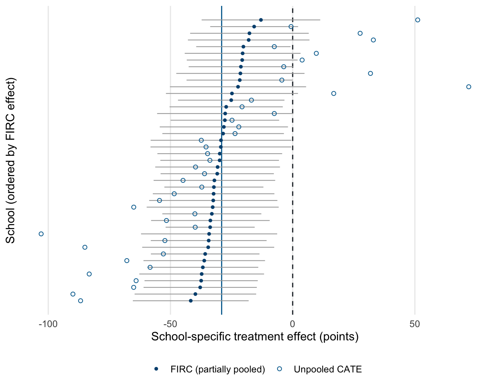
Stage 6: Sensitivity analysis
# Additive outcome model: one treatment coefficient for the OVB framework
fit_within_add <- lm(update(outcome_formula, ~ . + factor(school_id)),
1 data = dat_within, weights = weights)
# partial R^2 with treatment can be read alongside its partial R^2 with the outcome
treatment_model_within <- lm(
update(formula(fit_within_add), multisite_treatment ~ . - multisite_treatment),
data = dat_within, weights = weights
2)
r2dxj_x_within <- partial_r2(treatment_model_within, covariates = "student_math_conf")
3r2yxj_dx_within <- partial_r2(fit_within_add, covariates = "student_math_conf")
att_add_within <- avg_comparisons(fit_within_add,
variables = "multisite_treatment",
vcov = ~school_id)
4dof_within <- n_distinct(dat_within$school_id) - 1
sens_within <- sensemakr(
estimate = coef(fit_within_add)["multisite_treatment"],
se = att_add_within$std.error,
dof = dof_within,
treatment = "multisite_treatment",
r2dxj.x = r2dxj_x_within,
r2yxj.dx = r2yxj_dx_within,
5 benchmark_covariates = "student_math_conf",
6 kd = 1:3,
7 q = 1
)
# Readable benchmark labels for the reporting table and contour plot
sens_within$bounds$bound_label <- gsub("student_math_conf", "math confidence",
sens_within$bounds$bound_label)- 1
- This refits the Stage 5 formula with the school fixed intercepts added back, on the same matched sample with the same weights.
- 2
-
sensemakr’s benchmark bounds compare an observed covariate’s explanatory power for the treatment against its power for the outcome. The treatment side needs its own regression ofmultisite_treatmenton the same covariates used in the outcome model. - 3
-
partial_r2()(fromsensemakr) reads a covariate’s partial \(R^2\) from a fitted model. Computing it from both models gives the benchmark’s partial \(R^2\) with treatment and with the outcome. - 4
-
As in Stage 5, the model’s own standard error understates uncertainty under nesting, so we take the school-clustered standard error from
avg_comparisons()(equivalent to Stage 5’s two-way form, since matched pairs are nested in schools) and use cluster-based degrees of freedom, the number of schools minus one. - 5
-
benchmark_covariatesnames the observed covariate against which the RV is interpreted. The benchmark appears as reference points on the contour plot below, so we can ask whether a confounder of equivalent strength would matter. - 6
-
kd = 1:3askssensemakrto report bounds at 1, 2, and 3 times the benchmark strength. - 7
-
q = 1corresponds to asking how much an unobserved confounder would need to bias the estimate to reduce it by 100% (to zero). For a less extreme threshold (for example, reduce by 50%), lower q.
cat(ovb_minimal_reporting(sens_within, format = "html", verbose = FALSE,
outcome_label = "math_score"))| Outcome: math_score | ||||||
|---|---|---|---|---|---|---|
| Treatment | Est. | S.E. | t-value | \(R^2_{Y \sim D |{\bf X}}\) | \(RV_{q = 1}\) | \(RV_{q = 1, \alpha = 0.05}\) |
| multisite_treatment | -28.34 | 5.076 | -5.584 | 42.6% | 56.7% | 41.7% |
| Note: df = 42; Bound ( 1x math confidence ): \(R^2_{Y\sim Z| {\bf X}, D}\) = 21.4%, \(R^2_{D\sim Z| {\bf X} }\) = 0% | ||||||
plot(sens_within, sensitivity.of = "estimate", label.bump.x = 0.06)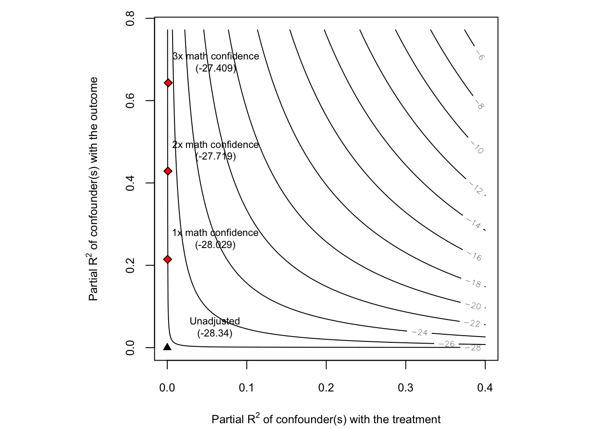